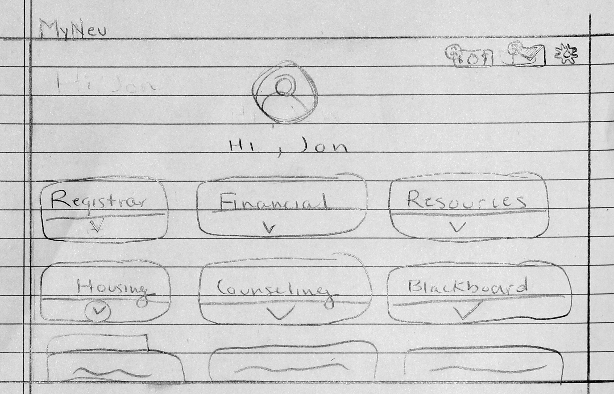
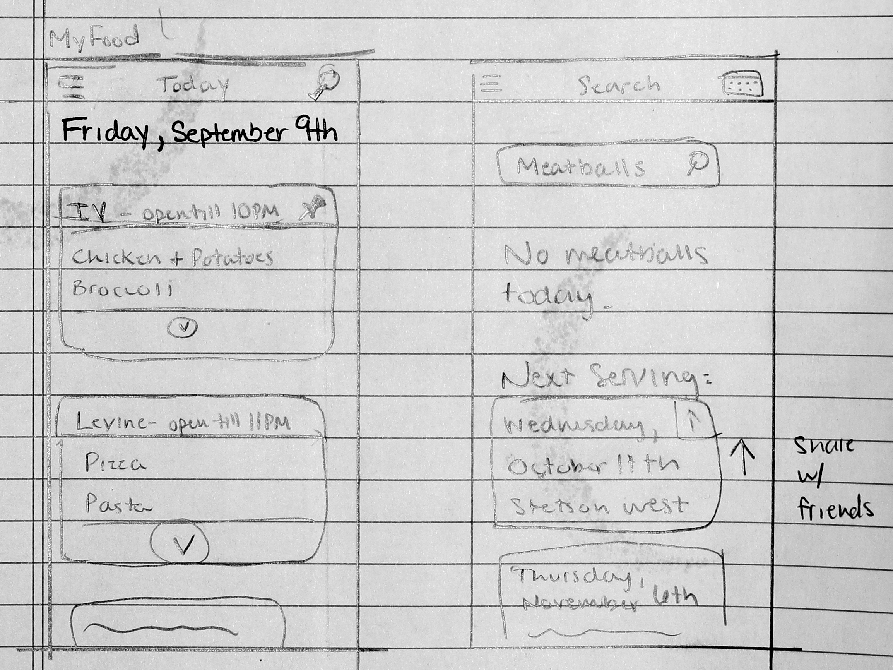

Individual Assignment #1
MyNeu
The idea behind the myNeu redo is to create a streamlined system that is adaptable and useful. The current myNeu is a bit disorganized, and has an outdated user experience. The new system would have a dedicated section for relevant notifications, alerting the user to things such as new email or payments due. The main section of the interface would give broad, expandable cards, each labeled with topics relevant to the user (housing, registration, finance, etc.) The use could expand the card they desired and access links from the submenu. I think this small amount of organization would greatly increase workflow and usability.
MyFood
The concept of myFood is an application contains all relevant information about dining on campus. The landing page would contain a list of all dining facilities at Northeastern (that are open that day), the time they close, and a quick glance at the menu. The data would be updated to highlight the new or rotating menu items, and from the landing page the user could tap a card for the full menu of a dining facility. Each menu item would be a searchable term, and the user could see where their favorite food was being served that day, or the next time it would be on campus. There is also the possibility for sharing integration, where the user could share the menu of the day with friends via text, or another form of social media.
MyCampus

MyCampus follows the same thought process of MyFood. With the size of Northeastern, it’s tough to track everything that is happening on any given day. MyCampus is the social solution. It acts as a calendar, showing what events are happening today, this week, and this month on campus. Each event is categorized by type, and the user can pin their favorite types of events to their home screen to receive information about them first. One possible way to populate the data would be to work with Facebook's calendar system, and pull data from selected user’s event schedule (like the Nor’easters, NU Hockey, etc.) There could also be a social aspect like MyFood, where users could share events via third party apps.
Individual Assignment #2
Typeform

The purpose of Typeform is to provide a minimal platform for users to create forms and questionnaires. I think they do a great job of keeping the design minimal and allow the user to focus on the task on hand. The feature I aspect I find good is the flow of the user experience. The part of the form that the user is on takes up a good portion of the screen, and everything above and below it is faded out slightly, so it's not distracting to the user. Also, there is keyboard mapping for all interactions on the form, so the user doesn't have to switch back and forth between the mouse and keyboard. It has clearly marked exits, and overall great visibility.
Slack

Slack is another application that seems to have a dedicated design team. It's has a really good user experience for a couple of reasons. One of the strongest aspects is the beautiful consistency across all platforms. It really minimizes the user memory load when switching between devices. the buttons are the same, and perform the same actions. The interfaces are almost identical as well, with minor changes for font size and different user input styles across devices.
Forbes

When it comes to software, I had to do some digging to find a bad user experience, as I tend to avoid products that don't consider their user when designing. However, I did find one site that's very frustrating. Forbes.com has one of the most aggressive advertising setups on any site I've seen online. If you have any adblocker set up, it automatically detects it and will not let you access the site unless you disable it (above).
Even if you disable your adblocker, it still stops you on the same page, only to show a full screen (below)

When you get into an article, the page is full of distractions (below), and has no consistency, as each part of the site has a slightly different navigation style. I think was designed to sell advertising space, rather than inform the reader.

Amtrak

I used amtrak's site to book tickets to New York, and the whole experience was not simple. I think one of the biggest flaws of the user experience is that there is too much information. The top bar(Destinations, Experience, Schedules, Deals) do not need to be on this screen, as well as couple of pieces of information. This lack of simplicity was a bit overwhelming, and it took me much longer than it should have to work through the screens, understand the differences between ticket levels, and order my ticket. I think it was designed this way to provide try to inform the user of their choices. However, I think thi might have backfired and done the opposite of the intented effect.